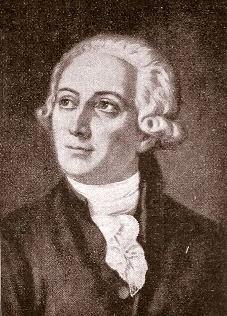
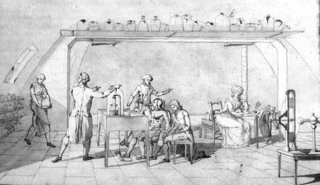
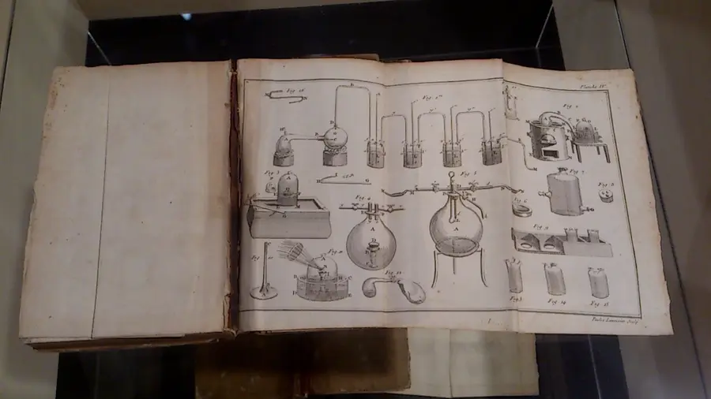
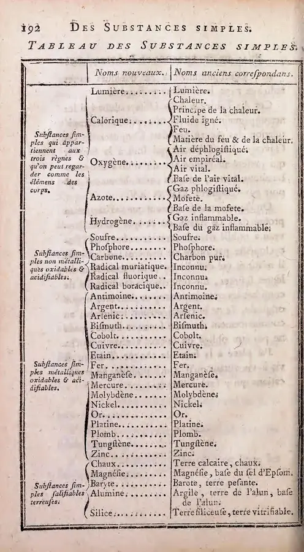
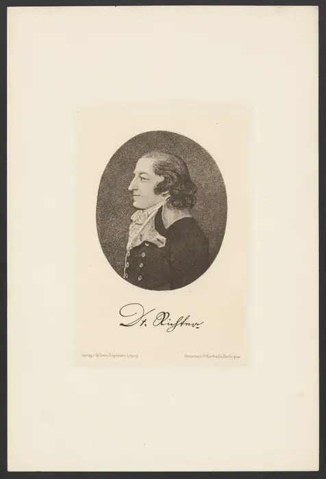
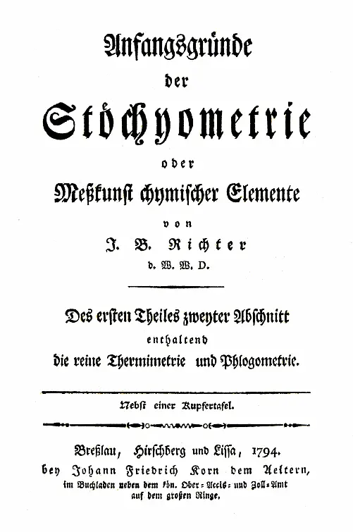
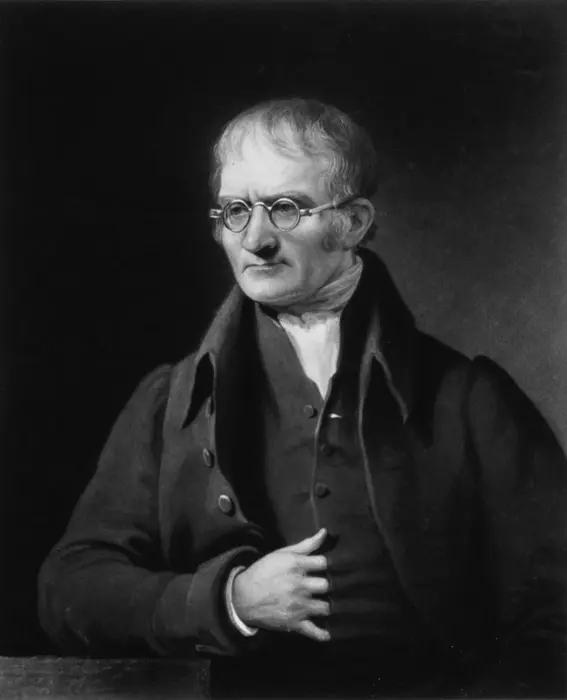
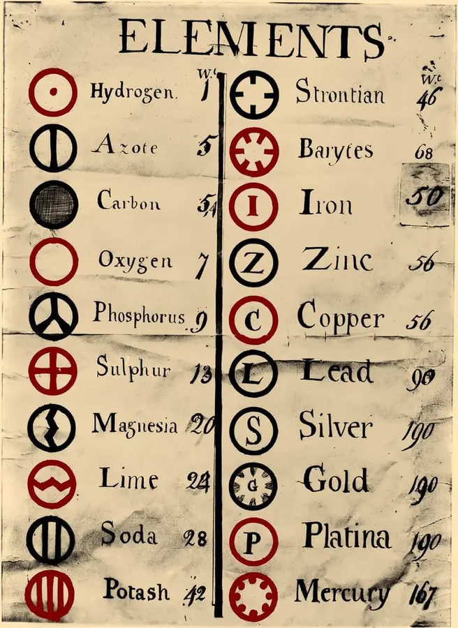
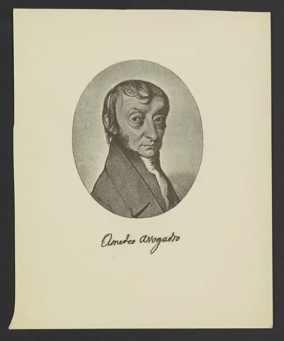

Chemistry · Lesson 11 · Quantitative Chemistry
Stoichiometry: Counting by the Equation
A balanced equation is a recipe for particles. Meet the chemists who learned that matter can be counted and weighed, then use mole ratios to predict how much product a reaction can make, find the limiting reactant, and explain why the leftover ingredient matters.
Part 1 · History & discovery
How chemists learned to count
Before 1770, chemistry was mostly describing substances: color, smell, what burned, what dissolved. Stoichiometry began when chemists started putting every reaction on a balance and asking a single question: how much? The word itself comes from the Greek stoicheion (“element”) and metron (“measure”): the measure of elements.
Click any picture below to enlarge it. These are scans and photographs of real books, prints and drawings, all in the public domain.
- Lavoisier weighs sealed vessels before and after heating metals and finds the total mass never changes. Rusting and burning add weight because the metal combines with part of the air.
- Lavoisier publishes Traité élémentaire de chimie, the first modern chemistry textbook, with a table of “simple substances” and the conservation of mass at its core.
- Jeremias Richter coins Stöchyometrie and shows that acids and bases neutralize each other in fixed mass ratios.
- Joseph Proust argues, against Claude Berthollet, that a compound always contains the same elements in the same mass ratio. By 1808 the evidence has settled the debate in his favor.
- John Dalton explains fixed ratios with atoms of definite relative weight, and finds that elements can combine in small whole-number multiples. He publishes his table of atomic weights in 1808.
- Joseph Gay-Lussac finds that reacting gases combine in small whole-number volume ratios, such as 2 volumes of hydrogen to 1 of oxygen.
- Amedeo Avogadro proposes that equal volumes of gas at the same temperature and pressure hold equal numbers of molecules, and that H₂ and O₂ are two-atom molecules. Almost nobody listens for 50 years.
- At an international chemistry congress, Stanislao Cannizzaro revives Avogadro's idea and chemists finally agree on consistent atomic weights.
- Jean Perrin counts molecules in experiments on Brownian motion and proposes naming the number of particles in a mole after Avogadro.
- The SI system defines the mole by fixing Avogadro's constant at exactly 6.02214076 × 10²³ per mole.
1 · Lavoisier: weigh everything
Antoine Lavoisier (1743–1794) was a French chemist who treated the balance as his most important instrument. He heated metals in closed flasks and weighed the whole flask before and after. The mass did not change, and the metal's gain in weight came out of the air inside. This became the law of conservation of mass: matter is rearranged in a reaction, not created or destroyed.
Every balanced equation is that law written in symbols: the same atoms on each side. His wife and collaborator Marie-Anne Paulze Lavoisier kept the laboratory notebooks, translated English chemistry papers for him, and drew the apparatus plates that illustrate his textbook.
Try it later: the magnesium burning reaction in the Workbench makes 10 g of Mg turn into about 16.6 g of MgO. Lavoisier would ask where the extra mass came from. (Answer: the oxygen of the air.)




2 · Richter: the man who named it
Jeremias Benjamin Richter (1762–1807) was a German chemist and mining official in Silesia. Working with acids and bases, he found that if a certain mass of one acid neutralizes a certain mass of a base, then different acids and bases always trade in fixed, repeatable amounts. He wrote that chemistry could become a branch of mathematics and in 1792 published the first volume of his Anfangsgründe der Stöchyometrie (“Foundations of Stoichiometry”).
His arithmetic was sound, but the idea was too early. Without atoms or moles to explain why the numbers came out fixed, chemists mostly ignored him. Richter's neutralization story still plays out in the Workbench: NaOH + HCl reacts one-to-one.


3 · Dalton: why the numbers are whole
If compounds always form in fixed mass ratios, something small and countable must be doing the combining. John Dalton (1766–1844), an English schoolteacher who was also a meteorologist, proposed in 1803 that each element is made of atoms with a characteristic weight, and that a chemical reaction rearranges whole atoms. Fixed ratios now had a cause.
His 1808 book A New System of Chemical Philosophy printed the first table of atomic weights, with hydrogen as 1. Look at his oxygen: about 7. Dalton assumed water was HO, one atom of each. The real mass ratio of oxygen to hydrogen in water is about 8 to 1, and because water is H₂O, one oxygen atom carries 16 times the mass of a hydrogen atom. He was wrong about the formula, but his method, weigh the reactants and divide by a reference, is exactly what you do in this lesson.


4 · Avogadro: counting what you cannot see
Gay-Lussac saw that 2 volumes of hydrogen plus 1 volume of oxygen make 2 volumes of steam. That looks like 2 H₂ + O₂ → 2 H₂O, our recipe from Part 2. But if oxygen were single atoms (as Dalton assumed), one volume of oxygen could never split to supply two volumes of steam. Amedeo Avogadro (1776–1856), an Italian physicist, solved it in 1811: equal volumes of any gas contain equal numbers of molecules, and hydrogen and oxygen gas are made of two-atom molecules.
That one idea ties together volumes, masses and molecule counts. It was ignored until Cannizzaro rescued it at the Karlsruhe Congress of 1860, four years after Avogadro's death. The mole is its direct descendant.

Discuss: Richter had the math, Proust had the data, and Avogadro had the explanation. Why did each of them go largely unheard in their own time? What does that say about how science becomes “accepted”?
Part 2
Read the recipe
For hydrogen burning, 2 H₂ + O₂ → 2 H₂O. The coefficients count particles, or moles, of each substance. They do not say that one oxygen molecule contains two hydrogen molecules; they describe a ratio across the reaction. Lavoisier's law shows up here too: 4 H atoms and 2 O atoms go in, and 4 H atoms and 2 O atoms come out.
Subscripts vs. coefficients. A subscript (the 2 in H₂) is part of the substance's identity and never changes. A coefficient (the 2 in front of H₂O) says how many of them react. You balance an equation by changing coefficients only.
Part 3
Count particles first: the limiting reactant
Put some hydrogen and oxygen molecules in a box and let them react. Each water needs 2 H atoms and 1 O atom, so every 2 H₂ pairs with 1 O₂. Whichever runs out first stops the reaction: that is the limiting reactant. What is left over is the excess reactant.
Before
After
Scale it up to moles. Chemists cannot count molecules one at a time, but the same arithmetic works if you count in dozens, or in moles. Suppose a fuel cell starts with 5 mol H₂ and 2 mol O₂:
Predicted output
H₂ can make 5 mol H₂O. O₂ can make 4 mol H₂O.
O₂ is limiting, so the maximum product is 4 mol H₂O.
Common trap: the limiting reactant is not the one with the smaller number. Compare each amount after dividing by its coefficient (the “moles ÷ coefficient” column in the Workbench below).
Part 4
The mole: a counting word, and a bridge to grams
A dozen means 12. A mole means 6.02214076 × 10²³ things, a number so large that one mole of atoms is an amount you can hold. It was chosen so that the atomic mass in atomic mass units becomes the molar mass in grams per mole: carbon is 12.011 u per atom, so 1 mol of carbon weighs 12.011 g. A balance, which Lavoisier loved, can now count atoms.
| Substance | Molar mass | How you get it |
|---|---|---|
| H₂ | 2.016 g/mol | 2 × 1.008 |
| O₂ | 31.998 g/mol | 2 × 15.999 |
| H₂O | 18.015 g/mol | 2 × 1.008 + 15.999 |
| CO₂ | 44.009 g/mol | 12.011 + 2 × 15.999 |
The stoichiometry map
You cannot weigh “moles,” and the equation only speaks in moles. Every stoichiometry problem is the same three-step trip:
Think like a scientist: the theoretical yield is what the arithmetic predicts. The actual yield is what you really collect. The ratio is percent yield = actual ÷ theoretical × 100%. Spills, side reactions, incomplete reactions and measurement uncertainty usually make it smaller than 100%, and a value above 100% is a clue that the product is wet or impure.
Part 5 · Interactive
Reaction workbench
Pick a reaction, enter masses in grams, and watch the map above run for you. It finds the limiting reactant, predicts the products, shows what is left over, and checks Lavoisier's law (mass in = mass out).
| Substance | Coef. | Given (g) | Moles | Moles ÷ coef. | After (g) |
|---|
Part 6 · Practice
Grams to grams
Use the stoichiometry map. All other reactants are in excess. Round to two decimals and enter your answer in grams. Atomic masses: H 1.008, C 12.011, N 14.007, O 15.999, Na 22.990, Mg 24.305, Al 26.982, Cl 35.45, Fe 55.845.
Part 7
Exit check
1. If 3 mol O₂ reacts with excess H₂, how many moles of H₂O can form?
2. A student mixes 4 mol H₂ with 1 mol O₂ (2 H₂ + O₂ → 2 H₂O). Which is the limiting reactant?
3. A student heats 5.00 g of a metal in an open crucible and the product weighs 7.00 g. A classmate says mass was “created.” Using Lavoisier's idea, what is the better explanation?
Sources and credits
Where the pictures come from
Every image in this lesson is a scan or photograph of a print, drawing or page that is in the public domain, hosted on Wikimedia Commons (the Richter and Avogadro portraits arrived there through the Digital Public Library of America). Each caption names the file so you can look up the original, and the credit line also appears when you enlarge a picture. Dates in the timeline follow standard histories of chemistry; look for disagreements between sources and treat them as part of the science.